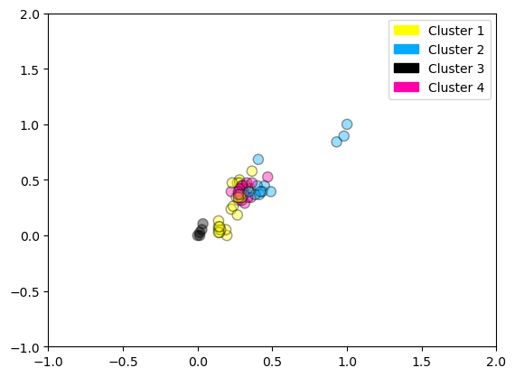
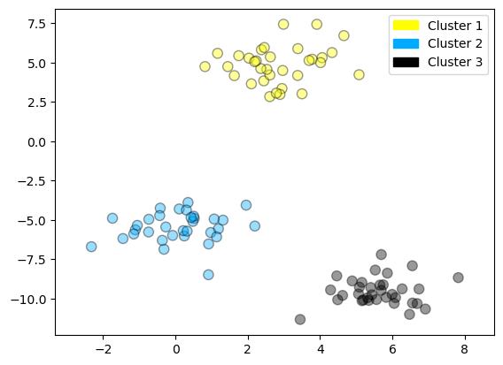
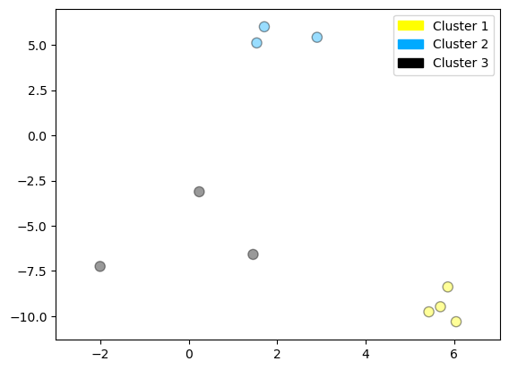
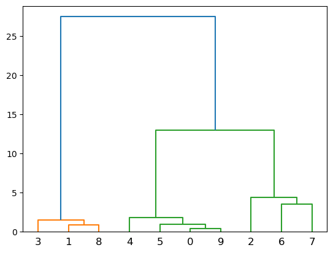
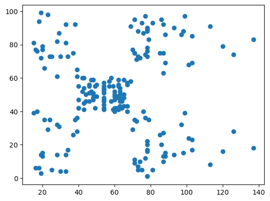
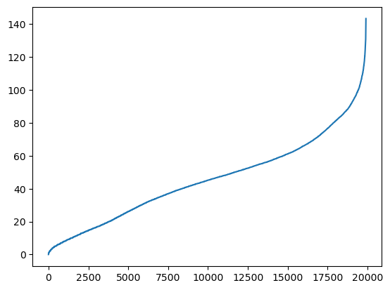

13. Aprendizaje no supervizado#
Preámbulo y datos
#%matplotlib notebook
import numpy as np
import pandas as pd
import seaborn as sn
import matplotlib.pyplot as plt
from sklearn.datasets import load_breast_cancer
# Breast cancer dataset
cancer = load_breast_cancer()
(X_cancer, y_cancer) = load_breast_cancer(return_X_y = True)
# fruits dataset
fruits = pd.read_table('Data/fruit_data_with_colors.txt')
X_fruits = fruits[['mass','width','height', 'color_score']]
y_fruits = fruits[['fruit_label']] - 1
13.1. K-means#
from sklearn.datasets import make_blobs
from sklearn.cluster import KMeans
from shared_utilities import plot_labelled_scatter
X, y = make_blobs(random_state = 10)
kmeans = KMeans(n_clusters = 3)
kmeans.fit(X)
plot_labelled_scatter(X, kmeans.labels_, ['Cluster 1', 'Cluster 2', 'Cluster 3'])
/Users/victormorales/opt/anaconda3/lib/python3.9/site-packages/sklearn/cluster/_kmeans.py:870: FutureWarning: The default value of `n_init` will change from 10 to 'auto' in 1.4. Set the value of `n_init` explicitly to suppress the warning
warnings.warn(
Ejemplo que muestra k-medias para encontrar 4 conglomerados en el conjunto de datos de frutas. Tenga en cuenta que, en general, es importante escalar las características individuales antes de aplicar la agrupación en clústeres de k-medias.
from sklearn.datasets import make_blobs
from sklearn.cluster import KMeans
from shared_utilities import plot_labelled_scatter
from sklearn.preprocessing import MinMaxScaler
fruits = pd.read_table('Data/fruit_data_with_colors.txt')
X_fruits = fruits[['mass','width','height', 'color_score']].to_numpy()
y_fruits = fruits[['fruit_label']] - 1
X_fruits_normalized = MinMaxScaler().fit(X_fruits).transform(X_fruits)
kmeans = KMeans(n_clusters = 4, random_state = 0)
kmeans.fit(X_fruits_normalized)
plot_labelled_scatter(X_fruits_normalized, kmeans.labels_,
['Cluster 1', 'Cluster 2', 'Cluster 3', 'Cluster 4'])
/Users/victormorales/opt/anaconda3/lib/python3.9/site-packages/sklearn/cluster/_kmeans.py:870: FutureWarning: The default value of `n_init` will change from 10 to 'auto' in 1.4. Set the value of `n_init` explicitly to suppress the warning
warnings.warn(
# https://scikit-learn-extra.readthedocs.io/en/latest/index.html
from sklearn_extra.cluster import KMedoids
kmedoides = KMedoids(n_clusters = 4, random_state = 0)
kmedoides.fit(X_fruits_normalized)
plot_labelled_scatter(X_fruits_normalized, kmedoides.labels_,
['Cluster 1', 'Cluster 2', 'Cluster 3', 'Cluster 4'])

13.2. Aglomerativo#
from sklearn.datasets import make_blobs
from sklearn.cluster import AgglomerativeClustering
from shared_utilities import plot_labelled_scatter
X, y = make_blobs(random_state = 10)
cls = AgglomerativeClustering(n_clusters = 3)
cls_assignment = cls.fit_predict(X)
plot_labelled_scatter(X, cls_assignment,
['Cluster 1', 'Cluster 2', 'Cluster 3'])

Creamos el dendograma
X, y = make_blobs(random_state = 10, n_samples = 10)
plot_labelled_scatter(X, y,
['Cluster 1', 'Cluster 2', 'Cluster 3'])
print(X)

[[ 5.69192445 -9.47641249]
[ 1.70789903 6.00435173]
[ 0.23621041 -3.11909976]
[ 2.90159483 5.42121526]
[ 5.85943906 -8.38192364]
[ 6.04774884 -10.30504657]
[ -2.00758803 -7.24743939]
[ 1.45467725 -6.58387198]
[ 1.53636249 5.11121453]
[ 5.4307043 -9.75956122]]
from scipy.cluster.hierarchy import ward, dendrogram
plt.figure()
dendrogram(ward(X))
plt.show()

13.3. DBSCAN clustering#
from sklearn.cluster import DBSCAN
from sklearn.datasets import make_blobs
X, y = make_blobs(random_state = 9, n_samples = 25)
dbscan = DBSCAN(eps = 2, min_samples = 2)
cls = dbscan.fit_predict(X)
print("Cluster membership values:\n{}".format(cls))
plot_labelled_scatter(X, cls + 1,
['Noise', 'Cluster 0', 'Cluster 1', 'Cluster 2'])
Cluster membership values:
[ 0 1 0 2 0 0 0 2 2 -1 1 2 0 0 -1 0 0 1 -1 1 1 2 2 2
1]
Otro ejemplo
uu = "https://raw.githubusercontent.com/vmoprojs/DataLectures/master/Mall_Customers.csv"
datos = pd.read_csv(uu)
dbDat = datos.iloc[:,3:5]
dbDat.describe()
| AnnualIncome | SpendingScore | |
|---|---|---|
| count | 200.000000 | 200.000000 |
| mean | 60.560000 | 50.200000 |
| std | 26.264721 | 25.823522 |
| min | 15.000000 | 1.000000 |
| 25% | 41.500000 | 34.750000 |
| 50% | 61.500000 | 50.000000 |
| 75% | 78.000000 | 73.000000 |
| max | 137.000000 | 99.000000 |
plt.figure()
plt.scatter(dbDat.AnnualIncome,dbDat.SpendingScore)
plt.show()

from scipy.spatial import distance_matrix
dd = pd.DataFrame(distance_matrix(dbDat.values, dbDat.values), index=dbDat.index, columns=dbDat.index)
n = len(np.sort(dd.values))
dd = np.sort(dd.values[np.triu_indices(n, k = 1)])
plt.figure()
plt.plot(dd)
plt.show()

dbscan = DBSCAN(eps = 10, min_samples = 3)
cls = dbscan.fit_predict(dbDat)
print("Cluster membership values:\n{}".format(cls))
plot_labelled_scatter(dbDat.values, cls + 1,
['Noise', 'Cluster 0', 'Cluster 1', 'Cluster 2'])
Cluster membership values:
[ 0 0 0 0 0 0 0 1 0 0 0 1 0 0 0 0 0 0 0 1 0 0 0 0
0 0 0 0 0 0 0 0 0 0 0 0 0 0 0 0 0 0 0 0 0 0 0 0
0 0 0 0 0 0 0 0 0 0 0 0 0 0 0 0 0 0 0 0 0 0 0 0
0 0 0 0 0 0 0 0 0 0 0 0 0 0 0 0 0 0 0 0 0 0 0 0
0 0 0 0 0 0 0 0 0 0 0 0 0 0 0 0 0 0 0 0 0 0 0 0
0 0 0 2 0 2 0 2 3 2 3 2 0 2 3 2 3 2 3 2 3 2 0 2
3 2 0 2 3 2 3 2 3 2 3 2 3 2 3 2 0 2 3 2 3 2 3 2
3 2 3 2 3 2 3 2 3 2 3 2 3 2 3 2 3 2 3 -1 3 2 3 -1
-1 -1 -1 -1 -1 -1 -1 -1]
Un ejemplo combinado
www = "https://stat.ethz.ch/Teaching/Datasets/WBL/crime2.dat"
crime = pd.read_csv(www,sep=" ")
crime.describe()
| murder | rape | robbery | assault | burglary | larceny | auto.theft | |
|---|---|---|---|---|---|---|---|
| count | 50.000000 | 50.00000 | 50.000000 | 50.000000 | 50.000000 | 50.000000 | 50.000000 |
| mean | 7.444000 | 25.73400 | 124.092000 | 211.300000 | 1291.904000 | 2671.288000 | 377.526000 |
| std | 3.866769 | 10.75963 | 88.348567 | 100.253049 | 432.455711 | 725.908707 | 193.394418 |
| min | 0.900000 | 9.00000 | 13.300000 | 43.800000 | 446.100000 | 1239.900000 | 144.400000 |
| 25% | 4.225000 | 18.32500 | 64.950000 | 148.850000 | 1000.075000 | 2248.900000 | 245.775000 |
| 50% | 7.300000 | 24.10000 | 106.050000 | 197.600000 | 1265.050000 | 2617.450000 | 333.850000 |
| 75% | 10.100000 | 32.52500 | 155.850000 | 282.575000 | 1529.825000 | 3007.600000 | 460.125000 |
| max | 15.800000 | 51.60000 | 472.600000 | 485.300000 | 2453.100000 | 4467.400000 | 1140.100000 |
from sklearn.decomposition import PCA
from sklearn.preprocessing import StandardScaler
# Before applying PCA, each feature should be centered (zero mean) and with unit variance
X_normalized = StandardScaler().fit(crime).transform(crime)
pca = PCA(n_components = 2).fit(X_normalized)
X_pca = pca.transform(X_normalized) # nuevos componentes
print('varianza explicada',pca.explained_variance_ratio_) # vaianza explicada
grupos = KMeans(n_clusters = 3)
grupos.fit(X_pca)
plot_labelled_scatter(X_pca, grupos.labels_, ['Cluster 1', 'Cluster 2', 'Cluster 3'])
varianza explicada [0.58785136 0.17696026]
/Users/victormorales/opt/anaconda3/lib/python3.9/site-packages/sklearn/cluster/_kmeans.py:870: FutureWarning: The default value of `n_init` will change from 10 to 'auto' in 1.4. Set the value of `n_init` explicitly to suppress the warning
warnings.warn(
dbscan = DBSCAN(eps = 0.8, min_samples = 3)
cls = dbscan.fit_predict(X_pca)
print(np.unique(cls))
plot_labelled_scatter(X_pca, cls + 1,
['Noise', 'Cluster 0', 'Cluster 1', 'Cluster 2'])
[-1 0 1 2]